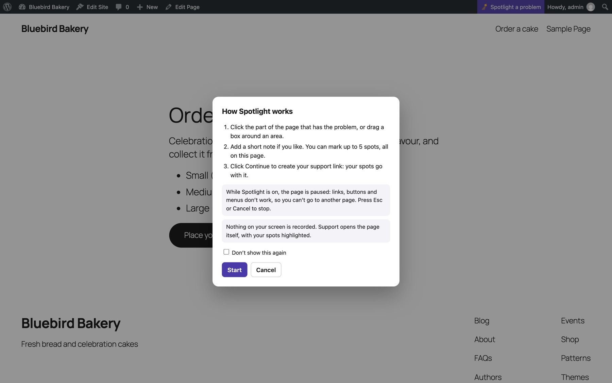
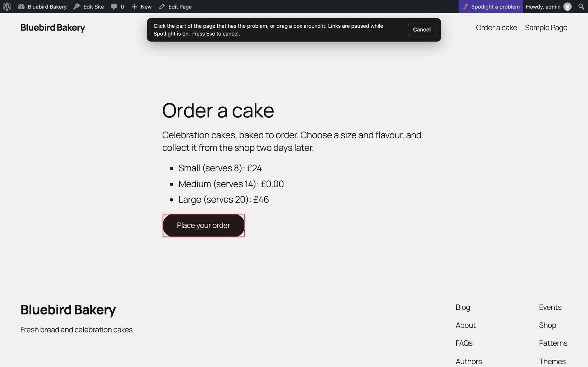
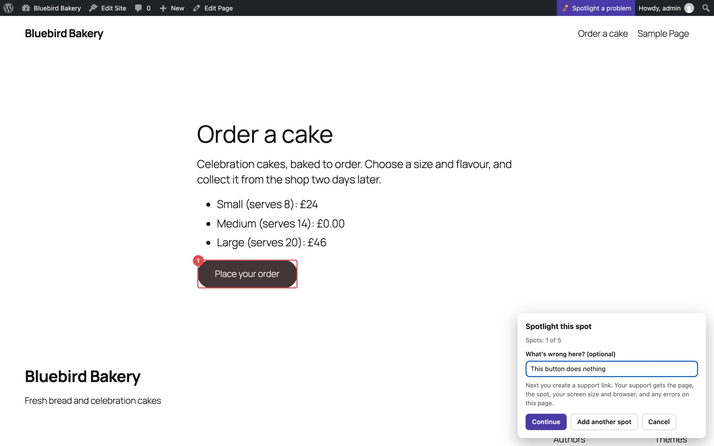
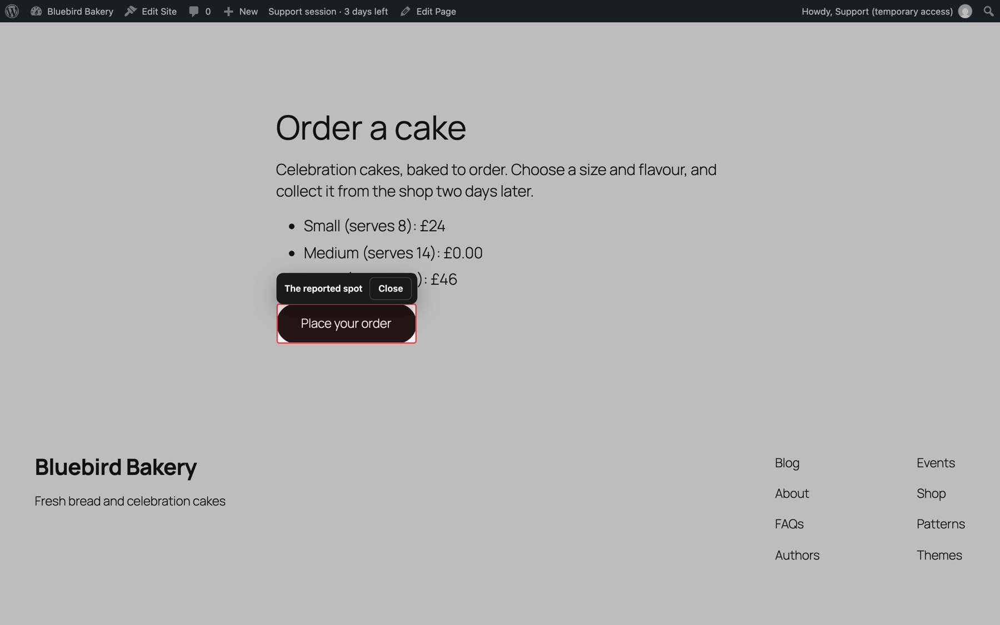

Spotlight
Spotlight lets you point at a problem on the page itself, instead of describing it. Your support team opens the same page with your spot highlighted.
Spotlight a problem#
- On the Fixpass page, choose Show the problem, then give access, then go to the page with the problem: any page of your site, or of the dashboard. (You can also go straight to the page and click the toolbar button.)
- Click Spotlight a problem in the toolbar at the top. It glows while the Fixpass page is guiding you.
- The first time, a short card explains how it works. Tick Don't show this again if you don't need it next time.
- Click the part of the page that's wrong, or drag a box around an area.
- Add a short note if you like ("wrong price", "button does nothing").
- Choose Capture another here, Browse to another page, or Finish. Collect up to five spots across pages within this WordPress site.
- While browsing, use the compact bar to Capture here, Review / edit, or Finish. Review lets you edit descriptions or remove spots; removing frees a slot.



Finish takes you back to the Fixpass page with your spots listed ("spots ready to send"), and the form to give access right below.
While Spotlight is on#
- Links pause only during capture. Browse to another page restores normal scrolling, links, buttons and menus.
- Esc / Cancel cancels the current capture and keeps saved spots. Discard all spots clears the collection.
- The draft survives same-site navigation and reloads in this tab for up to two hours. A storage warning means you must finish before leaving the page. Each spot keeps its original URL and diagnostics. Failed submission keeps your draft; successful submission clears it.
What's sent with a spot#
- The page address and title.
- Where the spot is on the page, so it can be highlighted again.
- Your note.
- Your screen size and browser.
- JavaScript errors on the page, and requests that failed.
Nothing on your screen is recorded and there is no video. Support opens the real page.
Screenshots (only if your agreement allows)#
If your support team's agreement turns screenshots on, each spot has Add a screenshot (optional). You can also send a screenshot on its own, without pointing at anything: choose Just a screenshot in the window that explains Spotlight, or while picking a spot. Fixpass redraws the page you are on, shows you the result and lets you point at the problem with an Arrow, Box or Pen, and drag Cover over anything you do not want support to see. Password and payment fields are covered for you. Choose Use this screenshot to attach it or Skip screenshot to send without. The screenshot stays on your site, never in FixHub. Support can open it from the highlight link only while access is open, it is deleted when access ends and after 30 days at most, and you can remove it before sending. Some embedded videos or maps may appear blank, because the page is redrawn in your browser.
What support sees#
Each spot has an Open and highlight link. It opens the page and draws a box where you pointed. If the page has changed and the exact element is gone, the box shows where it was.

Spots for pages in the dashboard need support to be logged in first.
Turn Spotlight off#
On the Fixpass page, under the two big buttons, click Turn it off next to "Spotlight is on". Spotlight is on by default. If it's off, Show the problem, then give access turns it on again.
The toolbar button is hidden while support access is open: the status is all you need then.
Still stuck? Check the FAQ, or ask on GitHub.